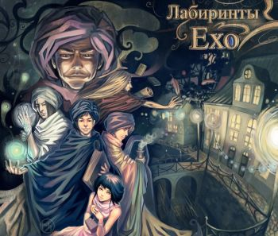

|

В «Предисловии правообладателей», предваряющем издание первого тома «Лабиринт» (издательство «Азбука», 1996 год) имеется сцена, где персонаж по имени Макс передаёт Стёпину и Мартынчик некие рукописи, при этом Макс указывает на этикетку безалкогольного напитка с надписью «alkohol frei», утверждая «вот так и пишется моя фамилия».
Сюжет циклов «Лабиринты Ехо» и «Хроники Ехо» построен на приключениях Сэра Макса преимущественно в городе Ехо (Практически в Сердце Мира), где он служит в Малом тайном сыскном войске — организации, занимающейся контролем за использованием магии в соответствии с Кодексом Хрембера и борьбой с совершаемыми с её помощью преступлениями. В «Хрониках Ехо», продолжении цикла «Лабиринты Ехо», действие происходит в Городе в Горах (Шамхуме), созданном Сэром Максом на окраинах Кеттари. Каждая книга этой серии содержит одну рассказанную историю из жизни сотрудников Тайного Сыска. Сэр Макс является так называемым «Вершителем», то есть все его желания сбываются «рано или поздно, так или иначе». Стоит добавить, что эта информация базируется только на первых книгах серии «Лабиринты Ехо». Впоследствии выясняется, что на самом деле он является очень древним существом, которое, пытаясь найти способ обмануть смерть, нашло радикальное решение — оно стало наваждением и позволило снова и снова выдумывать себя. В частности, его — вместе с его жизнью в нашем мире — придумал сэр Джуффин, точнее сказать, Макс «позволил себя придумать».
Цикл книг «Лабиринты Ехо»:
«Чужак (Лабиринт)» (1996)
1. Предисловие (1996)
2. Дебют в Ехо (1996)
3. Джуба Чебобарго и другие милые люди (1996)
4. Камера № 5-хох-ау (1996)
5. Чужак (1996)
6. «Король Банджи» (1996)
7. Жертвы обстоятельств (1996)
8. Путешествие в Кеттари (1996)
«Волонтёры Вечности» (1997)
1. Магахонские лисы (1997)
2. Корабль из Арвароха и другие неприятности (1997)
3. Очки Бакки Бугвина (1997)
4. Волонтеры вечности (1997)
«Простые волшебные вещи» (1997)
1. Тень Гугимагона (1997)
2. Простые волшебные вещи (1997)
«Вершитель (книга) или Темная сторона (в другом издании)» (1997)
1. Тёмные вассалы Гленке Тавала (1997)
2. Дорот — повелитель манухов (1997)
«Наваждения» (1997)
1. Зеленые воды Ишмы (1997)
2. Сладкие грезы Гравви (1997)
«Власть несбывшегося» (1998)
1. Возвращение Угурбадо (1998)
2. Гугландские топи (1998)
«Болтливый мертвец» (1999)
1. Тайна клуба дубовых листьев (1999)
2. Болтливый мертвец (1999)
3. Наследство для Лонли-Локли (1999)
4. «Книга огненных страниц» (1999)
«Лабиринт Мёнина» (2000)
1. Белые камни Харумбы (2000)
2. Лабиринт Мёнина (2000)
3. Тихий город (2000)
4. Эпилог (2000)
|